ここではメニューバーの各項目について説明します。メニューバーはサムネイルウィンドウとイメージウィンドウの両方に存在しますが、ここでは一緒に扱います。なお、片方のウィンドウにしかない項目には、「サムネイルウィンドウのみ」「イメージウィンドウのみ」と表記しています。項目名の後の [ ] 内は、既定のショートカットキーです。
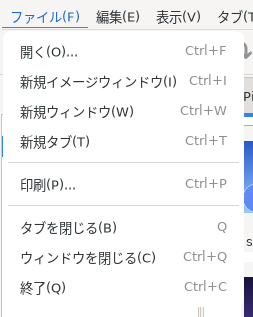
サムネイルウィンドウの [ファイル] メニュー
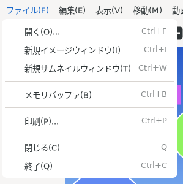
イメージウィンドウの [ファイル] メニュー
ファイルオープンダイアログを表示します。
「選択したファイルを開く」と、イメージウィンドウを新規に作成し、画像を展開します。
「選択したファイルのサムネイル」とすると、コレクションタブが新規に生成され、そこにコレクション(サムネイル表示)されます。選択したフォルダ (ディレクトリ) は、フォルダごとに新しいタブで開きます (ディレクトリビューでダブルクリックした時と同じです)。ファイルとフォルダを一緒に選んだ場合は、ファイルはコレクションタブに、フォルダはそれぞれのタブに表示されます。
空のイメージウィンドウを新規に作成します。
サムネイルウィンドウのみ。サムネイルウィンドウを新規に作成します。
イメージウィンドウのみ。サムネイルウィンドウを新規に作成します。
サムネイルウィンドウのみ。空のタブを新規に生成します。
イメージウィンドウのみ。展開している画像をメモリバッファに保持します。メモリバッファについての詳しい説明は、Tips の「イメージビューの描画を速くする」を参照してください。
サムネイルウィンドウでは、サムネイルビューで選択されている画像を印刷します。1 枚の画像を 1 ページに印刷します。画像が選択されておらず、プレビューに画像が表示されている場合は、その画像を印刷します。
イメージウィンドウでは、表示している画像を回転した向きで印刷します。
サムネイルウィンドウのみ。アクティブになっているタブを閉じます。
サムネイルウィンドウの「ウィンドウを閉じる」は、サムネイルウィンドウを閉じます。この時、展開されているイメージウィンドウはそのまま残ります。イメージウィンドウの「閉じる」は、そのイメージウィンドウを閉じます。
GImageView に関する、全てのウィンドウを閉じます。
サムネイルウィンドウ・イメージウィンドウが複数ある場合、それらは全て閉じられます。
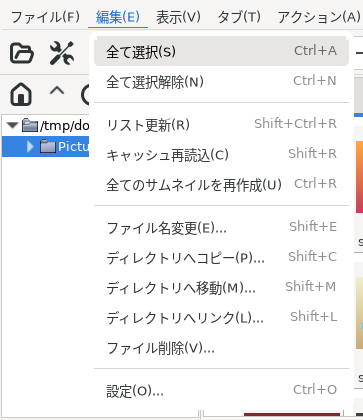
サムネイルウィンドウの [編集] メニュー (画像を 1 つ選択した状態)
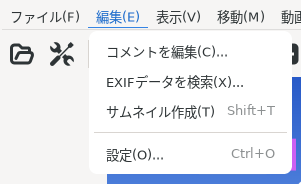
イメージウィンドウの [編集] メニュー
サムネイルウィンドウのみ。アクティブになっているタブ内のファイルを「全て選択」します。
サムネイルウィンドウのみ。アクティブになっているタブの「選択解除」を行います。
GImageView は、タブごとに選択(非選択)状態を保持しています。「全て選択解除」を行っても、アクティブになっていないタブについては、選択解除を行いません。
サムネイルウィンドウのみ。アクティブになっているタブの「リスト更新」を行います。
サムネイルウィンドウのみ。アクティブになっているタブの「キャッシュを再読込」を行います。
サムネイルウィンドウのみ。アクティブになっているタブの「サムネイルを再作成」を行います。
「リスト更新」「キャッシュを再読込」「サムネイルを再作成」の違いについては、Tips の「[リスト更新]・[キャッシュ再読込]・[全てのサムネイルを再作成]の違いについて」を参照してください。
サムネイルウィンドウのみ。サムネイルビューで選択されている画像(ファイル)の名前を変更します。
なお、画像(ファイル)が複数選択されている場合には、実行できません。
サムネイルウィンドウのみ。選択されている画像(ファイル)を他のディレクトリにコピーします。
なお、対象ディレクトリを選択するダイアログでは、タブ補完が可能です。
サムネイルウィンドウのみ。選択されている画像(ファイル)を他のディレクトリに移動します。
なお、対象ディレクトリを選択するダイアログでは、タブ補完が可能です。
サムネイルウィンドウのみ。選択されている画像(ファイル)に対するシンボリックリンクを張ります。シンボリックリンクを作りたいディレクトリを指定してください。
サムネイルウィンドウのみ。選択されている画像(ファイル)を削除します。
やり直しはききません。確認ダイアログに対する答えは、十分注意してください。
イメージウィンドウのみ。表示している画像のコメントを編集します。
イメージウィンドウのみ。表示している画像の EXIF データを表示します。
イメージウィンドウのみ。表示している画像のサムネイルを、[設定 | サムネイルキャッシュ] の「キャッシュ書込タイプ」の形式で作成します。
設定ダイアログを表示します。
設定内容の詳細は、項6を参照してください。
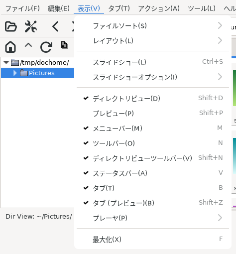
サムネイルウィンドウの [表示] メニュー
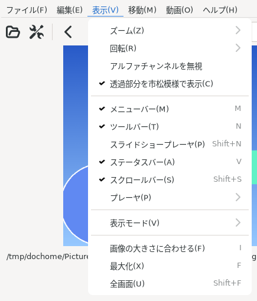
イメージウィンドウの [表示] メニュー
サムネイルウィンドウのみ。サムネイルビューを指定した順でソートします。
ここでの指定は、アクティブになっているタブと指定した後に開く全てのタブに対して有効です。
GImageView は、選択(非選択)状態と同様に、タブごとに並び順を保持していますので、開いていないタブについては、それまでのソート順が維持されます。なお、指定できる順は以下のとおりです。
名前
参照日時
更新日時
状態変更日時
サイズ
種類
画像幅
画像高さ
画像面積
このほか、「逆順」「大文字小文字を区別しない」「ディレクトリを区別しない」を指定できます。
サムネイルウィンドウのみ。サムネイルウィンドウの各ビュー(ディレクトリ・サムネイル・プレビュー)のレイアウトを変更します。レイアウト0〜4 (Ctrl + 0〜4)、カスタムから選択する事ができます。なお、カスタムレイアウトについての詳細は、Tips の「カスタムレイアウトについて」を参照してください。
GTK 4 版では、各レイアウトは配置を表す絵のボタンで並べて表示されます。絵の文字は、D がディレクトリビュー、T がサムネイルビュー、P がプレビューを表します。ボタンにマウスを乗せると、名前とショートカットキー (Ctrl + 0〜4) が表示されます。カスタムの絵は、その時点のカスタムレイアウトを表します。
サムネイルウィンドウのみ。サムネイルウィンドウ内の各ビュー(ディレクトリ・サムネイル・プレビュー)の配置を、あらかじめ用意されている構成から選択します。
GTK 4 版では、各構成は配置を表す絵のボタンで並べて表示されます。ボタンにマウスを乗せると名前が表示されます。
サムネイルウィンドウのみ。アクティブになっているタブについて、スライドショーを行います。
スライドショーについての設定は、項6.5で行ってください。
サムネイルウィンドウのみ。スライドショーの順序と対象を指定します。
最初から開始 / 選択画像から開始 / ランダム順 : 表示する順序です。
選択画像のみ : 選択されている画像だけを表示します。
画像と動画 / 画像のみ / 動画のみ : 表示するファイルの種類です。
イメージウィンドウのみ。イメージビューのズーム(拡大縮小)、「アスペクト比の保持」設定などを行います。
拡大 [S]、縮小 [A]、ウィンドウの大きさに合わせる [W]、幅を合わせる [Shift + W]、高さを合わせる [Shift + H]、アスペクト比を保持 [Shift + A] と、10〜200% [1〜9] があります。これ以外の倍率については、ツールバーから直接指定してください。
「アスペクト比を保持」にチェックが入っている場合、イメージビューの拡大縮小を行った時に、アスペクト比が保持されます。
イメージウィンドウのみ。イメージビューを回転します。時計回りに90°回転 [R]、反時計回りに90°回転 [E]、180度回転 [D] の3種類です。
イメージウィンドウのみ。画像の透過情報を使わずに表示します。
イメージウィンドウのみ。透過のある画像の背景を、灰色の市松模様で表示します。初期状態は [設定 | イメージウィンドウ] の画像の透過部分を市松模様で表示するに従います。
サムネイルウィンドウのみ。ディレクトリビュー表示 ON/OFF です。
サムネイルウィンドウのみ。プレビューの ON/OFF です。
メニューバー表示 ON/OFF です。
ツールバー表示 ON/OFF です。
サムネイルウィンドウのみ。ディレクトリビューの、ツールバー表示 ON/OFF です。
イメージウィンドウのみ。スライドショー操作用のツールバー表示 ON/OFF です。
ステータスバー表示 ON/OFF です。
イメージウィンドウのみ。スクロールバー表示 ON/OFF です。
サムネイルウィンドウのみ。サムネイルビューのタブ表示 ON/OFF です。
サムネイルウィンドウのみ。プレビューのタブ表示 ON/OFF です。
動画・音声の再生用ツールバーの表示を、「表示」「非表示」「自動」から選びます。「自動」では動画・音声を表示している時だけ表示します。
イメージウィンドウのみ。表示に使う方式 (画像表示、動画・音声のプラグイン) を切り替えます。
イメージウィンドウのみ。イメージウィンドウをイメージビューの大きさ(表示されている画像のサイズ)にリサイズします。ツールバーの[ウィンドウの大きさを画像に合わせる]と同じです。
イメージビューの倍率(表示されている画像のサイズ)は変更されません。リサイズされるのはイメージウィンドウの方です。
ウィンドウの最大化 ON/OFF です。
イメージウィンドウのみ。全画面表示 ON/OFF です。
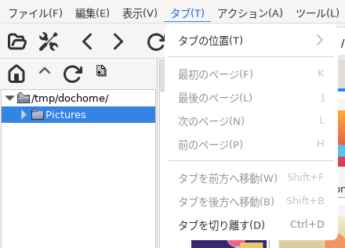
サムネイルウィンドウの [タブ] メニュー (タブが 1 つの状態)
サムネイルウィンドウのみのメニューです。
タブの表示位置を変更します。上・下・左・右の4つがあります。
最初のタブ(左端)をアクティブにします。
最後のタブ(右端)をアクティブにします。
次のタブ(1つ右)をアクティブにします。
前のタブ(1つ左)をアクティブにします。
アクティブになっているタブを、前に(1つ左)にずらします。
アクティブになっているタブを、後ろ(1つ右)にずらします。
アクティブになっているタブを切り離し、新規にサムネイルウィンドウを生成します。
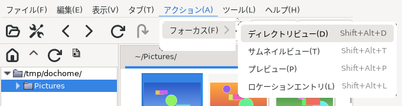
サムネイルウィンドウの [アクション | フォーカス] メニュー
サムネイルウィンドウのみのメニューです。
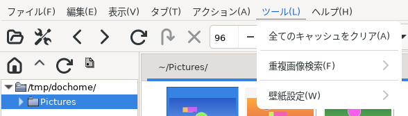
サムネイルウィンドウの [ツール] メニュー
サムネイルウィンドウのみのメニューです。
[設定 | サムネイルキャッシュ] の「キャッシュ書込タイプ」の形式のサムネイルキャッシュを、全て削除します。
アクティブなタブについて、重複している画像を検索します。サブメニューで、比べ方を「類似度」「ファイルサイズ」「md5sum」から選びます。
本コマンドは、ファイル選択の有無は関係ありません。タブ内の全ての画像に対して実行されます。「類似度」の精度は [設定 | 検索] で指定します。
選択している画像を、デスクトップの壁紙にします。「このデスクトップ」は、実行中のデスクトップ (環境変数 XDG_CURRENT_DESKTOP) に合うコマンドを使います。その下には、Xfce・GNOME・KDE Plasma などのデスクトップごとの項目があります。
JPEG・PNG 以外の画像やアーカイブ内の画像は、PNG に変換して ~/.gimv/wallpaper/ に置いたものを壁紙にします。項目とコマンドは ~/.gimv/gimvrc の wallpaper_menu で変更できます。
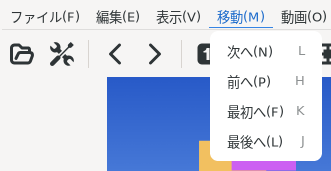
イメージウィンドウの [移動] メニュー
イメージウィンドウのみのメニューです。
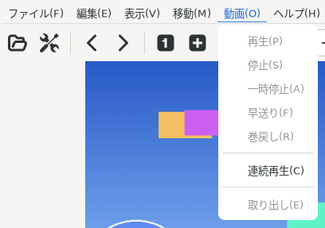
イメージウィンドウの [動画] メニュー (画像を表示している状態)
イメージウィンドウのみのメニューです。動画・音声を表示している時に使えます。
動画・音声の再生を操作します。
再生が終わると、次のファイルに移って再生します。初期状態は [設定 | 動画と音声] の連続再生に従います。
Xine プラグインで表示している時に使えます。停止中に、xine の入力プラグインを選び、そのプラグインが再生できるもの (MRL) の一覧を表示対象にします。